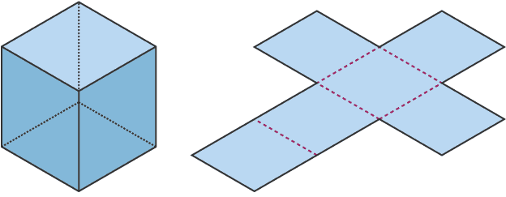

Extend Yourself
Measure the Surface Area of a 3D Shape
You can use what you know about finding the area of a regular polygon to find the surface area of a 3D shape. If you can find the area of a 2D shape, you can find the surface area of a 3D shape. The surface area of a 3D shape can be found by adding together the area of all the sides that make up the 3D shape.

A deconstructed 3D shape is also called a geometric net. If you fold the the deconstructed 3D shape above together you make a cube. A cube is made from six 2D shapes called squares.

Build your own 3D shape and use what you know about finding the area of a 2D shape to find the surface area of a 3D shape. What is the name of your 3D shape? What 2D shapes make up your 3D shape?
Career Connection
Think about a job you are interested in. Maybe you want to bake and decorate cakes, or build race cars, or make art, or even organize concerts. Think about how each of these jobs might use perimeter and area. How will you use perimeter and area? If you don't know, research some of the job responsibilities and see how the ability to measure and calculate perimeter and area might make you more successful in your future career.